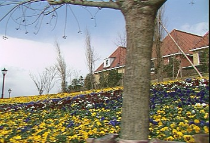

Exemplar-Based Image Inpainting - removing large objects from images.
Selected objects has been replaced by a visually plausible background that mimics the appearance of the source region. Unlike other inpainting tools (logo removers), this filter does not blur image "holes". It tries to replace holes by similar texture elements (patches, exemplars, blocks) from frame image area, taking into account the image special points (with estimated confidence and priority). Block inpainting is started at hole border and propagates to its internal area, with isophote as a direction.
Algorithm is based on article: Object Removal by Exemplar-Based Inpainting. A. Criminisi, P. Perez, K. Toyama. In Proc. Conf. Comp. Vision Pattern Rec., Madison, WI, Jun 2003. http://research.microsoft.com/vision/cambridge/papers/Criminisi_cvpr03.pdf
ExInpaint (clip, clip "mask", int "color", int "dilate" int "xsize", int "ysize", int "radius", int "steps")
very first parameter is source clip. If mask clip is omitted and source clip is RGB32 then its alpha channel is used as a mask with threshold = 127 (all pixels with correspondent alpha 128-255 will be inpainted). In other cases, the mask is taken from mask clip and processed differently.
mask : clip with mask. Must be same format and size as source clip.
color : color of mask in mask clip (if used). Pixels with this color ONLY will be considered as a mask. (default = $FFFFFF as pure white for RGB). Note: for YUV color space the color value is in YUV (like color_yuv in ColorYUV filter).
dilate : (experimental) flags of mask dilation. 0 - do not dilate, 1 - horizontal dilate, 2 - vertical dilate, 3 - all directions dilate. Default=0.
xsize, ysize : horizontal and vertical patch (block) size to search and inpaint. Patch should be slightly larger than the largest distinguishable texture element. (default=8)
radius : search radius for similar block. Should be greater than doubled patch size and greater than maximal hole radius. The greater, the slower. Set to 0 for auto-estimated value (default).
steps : limit number of inpainting steps for debug (default=100000, almost not limited).
It is slow, not optimized, especially for large radius.
It is spatial filter developed for still images. Only current frame is used. So, we can see temporal instability in this version.
Potentially it may be used for logo removal, film restoration (spots and scratches removal), and filling of empty or damaged areas after VHS capture or motion compensation.
It can be implemented differently, may be as a part of MVTools. Current version is mostly for testing.
For logo removing and similar tasks you can also try XLogo, AVSInpaint, Greycstoration inpainting filters.
Letterboxed frame with blue mask at borders (of course, we could mask not only border):

Inpainted frame which was restored from the masked frame (nice flowers, tree and house textures):

Original frame to compare (some hidden details are different of course):
Used script to produce the example:
loadplugin("exinpaint.dll")
AVISource("G:\flower\sflowg.avi")
converttorgb
i=last
c=letterbox(16,16,16,16,color=$0000ff) # blue mask
# (for some reason blue is $0000FE in JPG image)
exinpaint(c,c,color=$0000ff) # use source clip as mask clip
interleave(c,last,i)
http://forum.doom9.org/showthread.php?t=133773
Version 0.1 (13.01.2008)
Version 0.2 at 26 January 2008
Version 0.2.0 (16.09.2009, same binary)
Version 0.2.0.0 (15.09.2011, same binary)